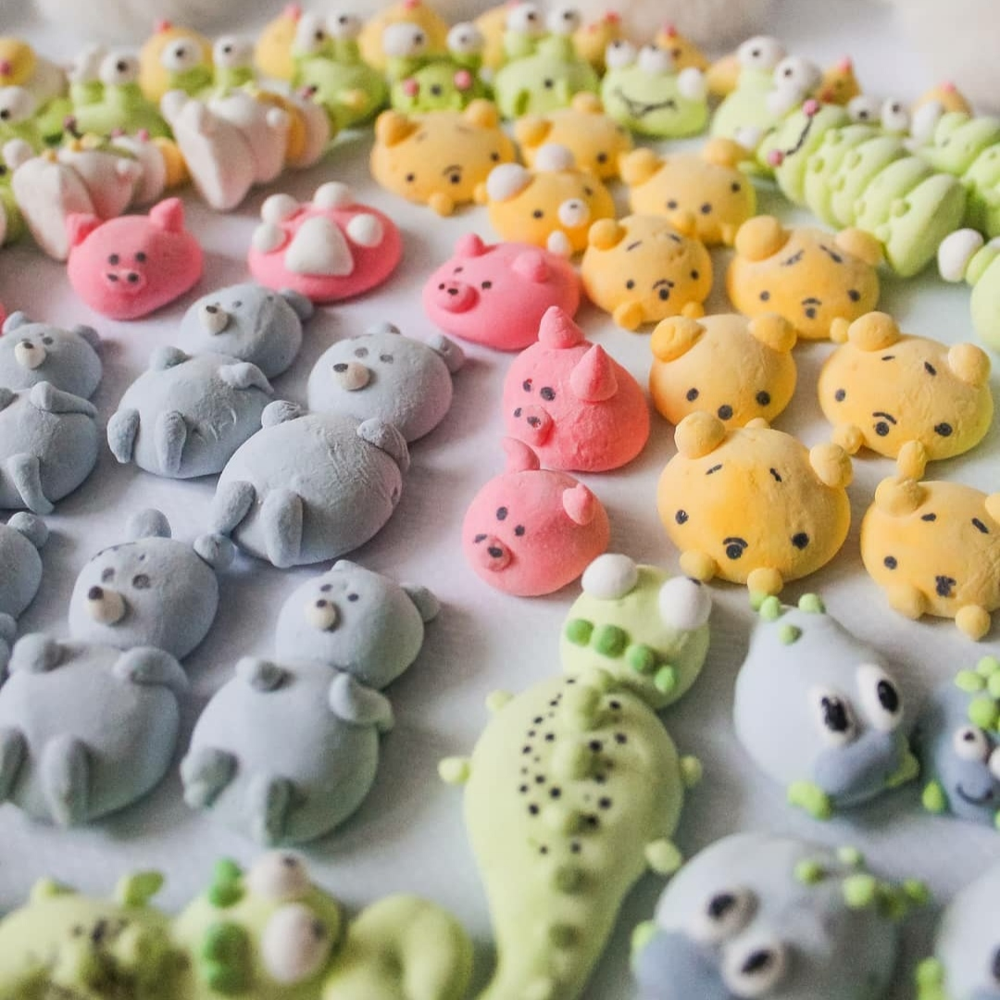
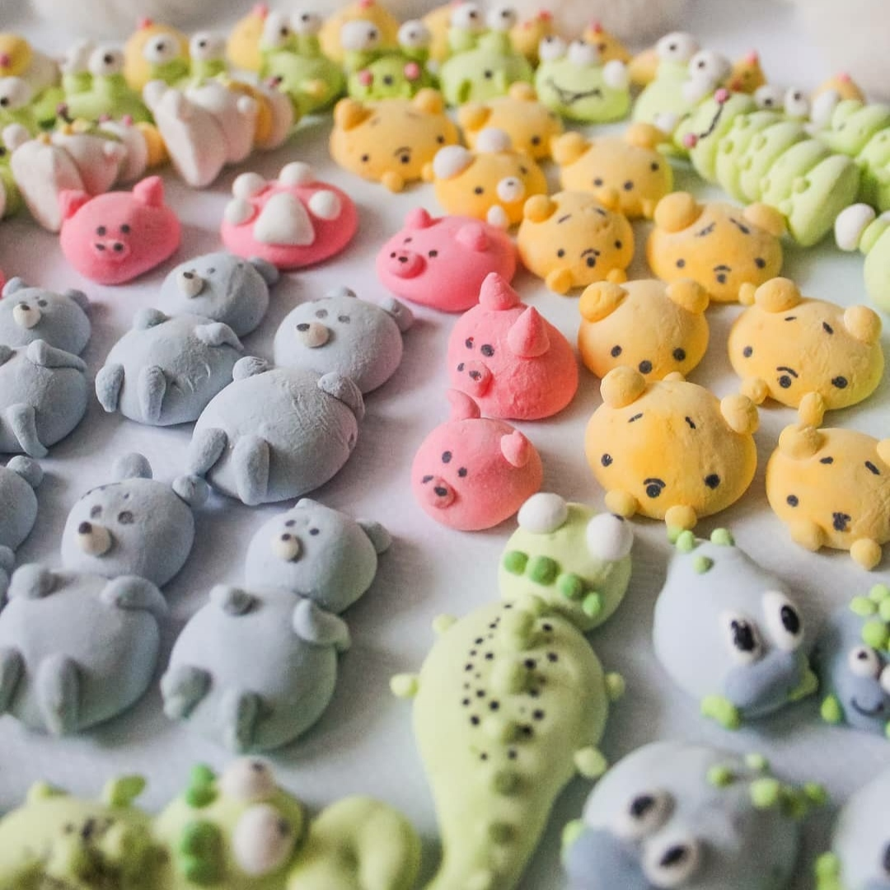

Маршмеллоу
Маршмеллоу – это нежнейшая как облако сладость, которая тает во рту. Дети обожают жарить маршмеллоу на огне, а взрослые – добавлять в кофе или какао. Но и взрослые и дети с удовольствием поедают его как самостоятельную сладость.
Маршмеллоу бывает двух видов: в виде кубиков с разными фруктово-ягодными и не только вкусами или в виде фигурок.
Маршмеллоу в виде кубиков мы приготовим следующих вкусов:
- клюквенный
- клубничный
- вишневый
- черная смородина
- мятный
- апельсиновый
- вишневый с корицей
- мохито безалкогольный (мята+ лимон)
- мохито алкогольный (мята+ лимон+ белый ром)
- глинтвейн
- лимонный
- лимон-имбирь
- лавандовый
- облепиховый
- кофейный
- кофейный с печеньем Орео
- шоколадный
Маршмеллоу упаковываются в красивые коробки с атласной лентой.
Минимальный заказ маршмеллоу кубиками одного вкуса - коробках 15 на 15 см.Стоимость такой коробки – 15 рублей . Стоимость коробки 20 на 20 см – 25 рублей . 25 на 25 см – 35 рублей.
Маршмеллоу можно также упаковать в более мелкие коробки или пакетики. В этом случае цена обговаривается дополнительно.

 
